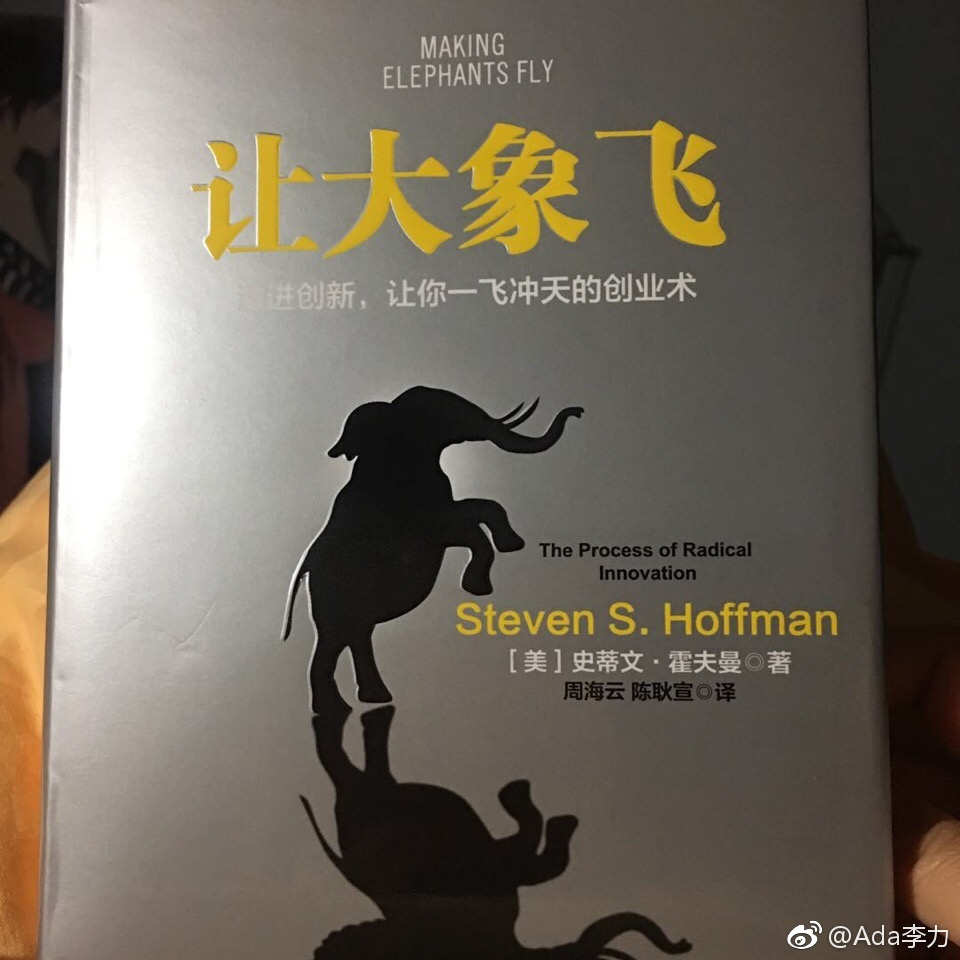

#读书#《让大象飞》很像是来自硅谷创业的工具箱，里面有各种问题，技巧和案例，总会有地方启发到你。
比如精益创业，虽然在自己创业前已读过相关书籍，但是回想已经过去的两年半时间，还是遗憾如果早用MVP验证，也许能少走些弯路，或者时间能缩短些。这本书中举出的一些创业公司的MVP例子，相当有创意性。
霍夫曼船长提醒中国创业者，要给艺术，冥想，甚至跟创业无关的爱好多留些时间，创新需要土壤，单一单调的环境是创新大敌。有些创业者标榜的所有时间都给了工作，在作者看来，并不是个好现象。
作者本人是典型跨界者，所以他提倡创业团队的多样性，也就不奇怪了。他尤其强调设计的重要性，理解并接受这点，像我这种理工专业出身，多年在技术领域的人来说，还会有些难度。重视并不是口头宣讲，而是体现在你是否会用高薪和诚意去邀请顶级设计师加盟。
比如精益创业，虽然在自己创业前已读过相关书籍，但是回想已经过去的两年半时间，还是遗憾如果早用MVP验证，也许能少走些弯路，或者时间能缩短些。这本书中举出的一些创业公司的MVP例子，相当有创意性。
霍夫曼船长提醒中国创业者，要给艺术，冥想，甚至跟创业无关的爱好多留些时间，创新需要土壤，单一单调的环境是创新大敌。有些创业者标榜的所有时间都给了工作，在作者看来，并不是个好现象。
作者本人是典型跨界者，所以他提倡创业团队的多样性，也就不奇怪了。他尤其强调设计的重要性，理解并接受这点，像我这种理工专业出身，多年在技术领域的人来说，还会有些难度。重视并不是口头宣讲，而是体现在你是否会用高薪和诚意去邀请顶级设计师加盟。
- 